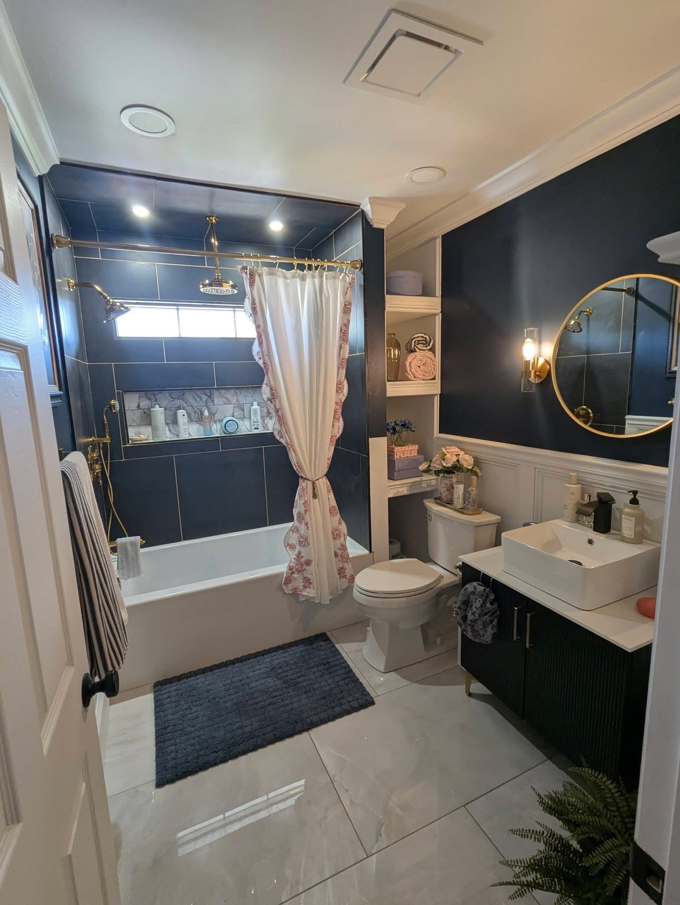
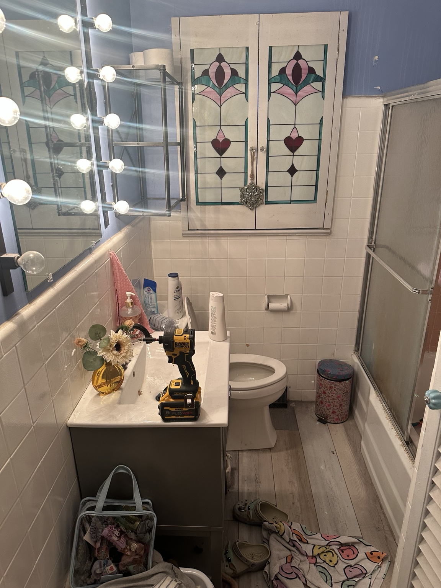
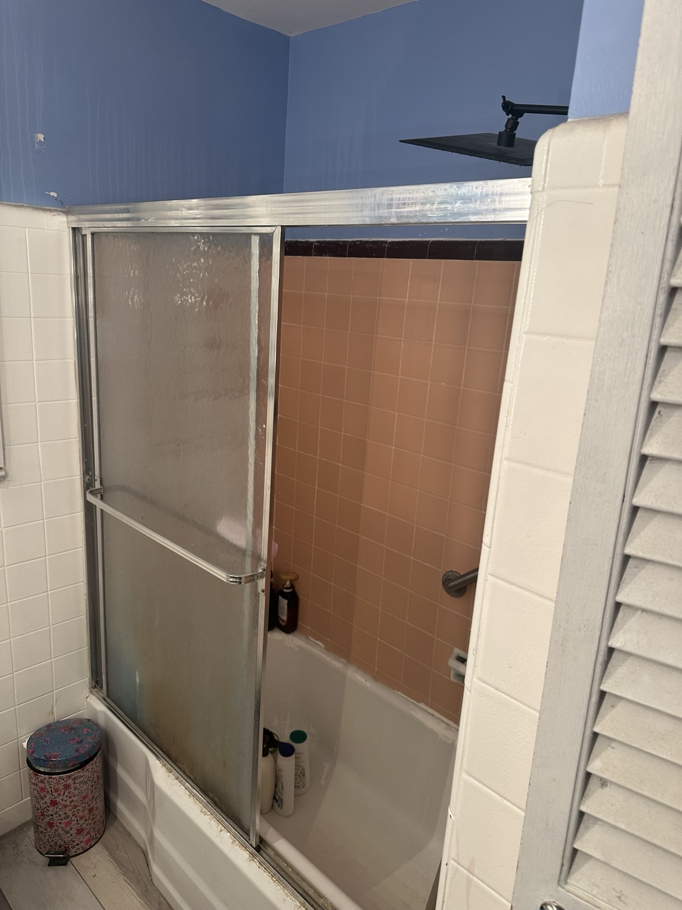
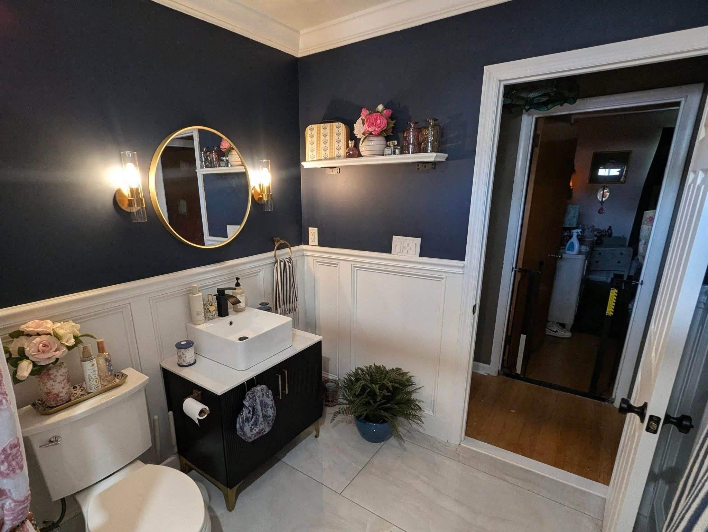

Bathroom Remodel Guide
Use this guide to plan an outdated bathroom update, compare repair needs, and understand the steps behind tile, vanity, waterproofing prep, lighting, trim, and paint-ready finish work.




1. Original Bathroom Problems
- Dated wall tile, older shower enclosure, worn flooring, and limited storage.
- Poor lighting and older vanity layout that made the room feel smaller.
- Trim, caulk, paint, and finish details that needed a cleaner updated look.
2. Planning the Remodel
A bathroom remodel should start with the layout, tile selection, lighting plan, storage needs, fixture style, and what repairs are hiding behind old materials. In a smaller bathroom, clean lines, better lighting, and smarter storage make a big difference.
3. Demo and Preparation
Demo includes removing old fixtures, protecting surrounding areas, checking walls and floors, cleaning up debris, and preparing surfaces for new tile, trim, drywall repair, or waterproofing prep. Good prep is what helps the finish work look professional.
4. Minor Plumbing and Layout Changes
Bathroom projects often include fixture replacement, vanity plumbing prep, toilet replacement, faucet updates, and shower fixture prep. South Jersey Repairs focuses this work around bathroom remodeling, fixture updates, vanity prep, toilet replacement, and minor plumbing repairs tied to the remodel or repair list.
5. Tile and Waterproofing Prep
Tile work depends on layout, surface prep, waterproof shower prep, grout spacing, edge details, niche planning, and material selection. Shower areas need extra care because water finds weak spots fast.
6. Lighting and Finish Work
Recessed lighting, vanity lighting, mirrors, trim, wainscoting, paint, caulk, and final hardware make the remodel feel complete. These details are also what buyers and tenants notice first.
7. Final Reveal
The finished bathroom has a cleaner layout, modern finishes, better lighting, updated tile, improved storage, and a more polished look for everyday use, rental turnover, or seller prep.
8. Homeowner Tips
- Set a budget for visible upgrades and hidden repair issues.
- Do not skip waterproofing prep in wet areas.
- Choose low-maintenance materials for rentals and busy homes.
- Send photos before requesting a quote so the repair list is realistic.
Need Bathroom Remodeling in South Jersey?
Text photos of the vanity, shower, tile, floor, ceiling, and any damage. South Jersey Repairs helps with bathroom remodeling, minor plumbing repairs, drywall repair, trim, tile, property maintenance, and cleanup.